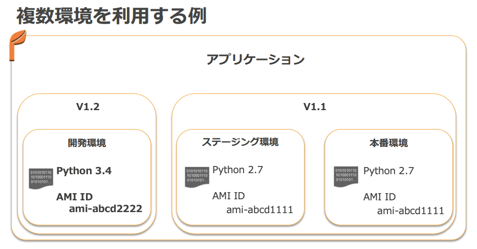

プロビジョニング・デプロイ自動化と Infrastructure as Code

| サービス名 | 目的 | 動作概要 | 主要対象リソース |
|---|---|---|---|
| CloudFormation | AWS インフラの自動構成 | JSON または YAML で記述されたテンプレートから AWS リソースを自動で作成・削除する | VPC, EC2, Auto Scaling, S3, IAM など多くの AWS サービス |
| Elastic Beanstalk | Web アプリ実行環境の自動構成 | ソースコードや Docker コンテナをアップロードすると、ランタイム環境やサーバを自動で構築・デプロイする | EC2, Auto Scaling, ELB, RDS, CloudWatch など |
| OpsWorks |
Chef/Puppet を用いたサーバ設定管理 | レイヤーとスタックの概念を用いてサーバ構成を自動化。レシピに従いアプリやミドルウェアをインストールする | EC2, ELB, Auto Scaling、オンプレミスサーバも管理可能 |
- CloudFormation は AWS リソースのプロビジョニングに特化。
- ソフトウェアのデプロイやアップデートなどはしない。
- Beanstalk, OpsWorks はインフラのプロビジョニング、アプリケーションのデプロイ、運用時のモニタリングまで全体をカバー。
- Web アプリの定番構成 → Beanstalk
- Web アプリでない、定番構成でない、既に Chef/Puppet 使っている → OpsWork
- CloudFormation + Beanstalk/OpsWork との組み合わせもできる
AWS CloudFormation
- AWS サービスのプロビジョニングを実施するサービス。
- EC2、ELB、RDS などの AWS リソース環境を自動でセットアップ。
- テキストファイルによるテンプレート記述。
- JSON または YAML で記述。
- テンプレートをバージョン管理することで IaC を実現。
- 無料。
CloudFormation テンプレート
- JSON or YAML 形式。
- 変装をパラメータとして渡せる。
- テンプレートは S3 にアップロードする必要がある。
- CloudFormation デザイナー
- テンプレート作成の GUI ツール。リソースをドラッグ&ドロップして編集。
- https://docs.aws.amazon.com/ja_jp/AWSCloudFormation/latest/UserGuide/working-with-templates-cfn-designer-overview.html
- テンプレートスニペット
- AWS の各種リソースのテンプレート例 (JSON/YAML)
- https://docs.aws.amazon.com/ja_jp/AWSCloudFormation/latest/UserGuide/CHAP_TemplateQuickRef.html
テンプレートの項目
AWSTemplateFormatVersion: '2010-09-09'
Description: 説明を記述する
Parameters:
# パラメータ定義
Mappings:
# マッピング定義
Conditions:
# 条件定義
Resources:
# リソース定義
Outputs:
# 出力定義
- AWSTemplateFormatVersion (オプション) … テンプレートのフォーマットバージョン。
- Description (オプション) … テンプレートの説明文。
- Parameters (オプション) … テンプレート外から受け取る入力値を定義する。
- Mappings (オプション) … リージョンや環境に応じた定数をマッピングする。
- Conditions (オプション) … リソース作成の条件を定義するための論理式。
- Transform (オプション) … マクロや AWS SAM テンプレートを利用する場合に指定。
- Resources (必須) … 作成する AWS リソースを定義する部分。
- Outputs (オプション) … 他スタックにエクスポートしたい値や出力を定義する。
Parameters
Parameters:
InstanceTypeParameter:
Type: String
Default: t2.small
AllowedValues:
- t2.small
- a1.xlarge
- t3a.xlarge
- c5n.xlarge
Description: Amazon EC2 instance type
- Type:
- String
- Number
- CommaDelimitedList
- List\<Type>
- AWS 特有のタイプ (例: AWS::EC2::KeyPair::KeyName など)
- Description ... 説明文
- Constraints ... 制約条件
- ConstraintDescription (String)
- Constraints がエラーになった場合にエラーメッセージとして出力する文字列。
- Min/MaxLength
- Min/MaxValue
- Defaults
- AllowedValues (array)
- AllowedPattern (regexp)
- NoEcho (Boolean)
- パラメタ値をコンソールや CLI 出力でマスクするかを指定。
- ConstraintDescription (String)
- https://docs.aws.amazon.com/AWSCloudFormation/latest/UserGuide/parameters-section-structure.html
パラメータ検証
- AllowedPattern: 正規表現による入力制約
- 例: IPv4/CIDR 用のパターン
'^(\\d{1,3})\\.(\\d{1,3})\\.(\\d{1,3})/(\\d{1,2})'$
- 例: IPv4/CIDR 用のパターン
- AllowedValues: あらかじめ許可する文字列を列挙
- 例:
[ 't2.micro', 't2.small', 'i3.16xlarge' ]
- 例:
- Parameter Type: AWS 固有の型を指定。例:
AWS::EC2::KeyPair::KeyName。 - Default: デフォルト値を設定。ユーザが入力しなかった場合の値を。
擬似パラメータ (Pseudo Parameters)
- CloudFormation が自動的に提供する 組み込みの読み取り専用パラメータ。
- すべての CloudFormation テンプレートで デフォルトで利用可能。
- !Ref や Fn::Sub などで参照可能。
| 疑似パラメータ | 説明 | 例 |
|---|---|---|
AWS::AccountId |
AWS アカウント ID を返す | 123456789012 |
AWS::NotificationARNs |
通知先 ARN のリスト | [arn:aws:sns:us-east-1:123456789012:mytopic] |
AWS::NoValue |
値なしを返し、プロパティを削除 | なし |
AWS::Region |
デプロイ先リージョン | ap-northeast-1 |
AWS::StackId |
スタックの ARN | arn:aws:cloudformation:ap-northeast-1:...:stack/MyStack/... |
AWS::StackName |
スタック名 | MyStack |
SSM Parameters Store 参照
- Parameter Type の
AWS::SSM::Parameter::Value<Type>を使用すると Value に Parameters Store のパラメータ名を指定して値を参照できる。
Parameters:
InstanceType:
Type: 'AWS::SSM::Parameter::Value<String>'
Default: /EC2/InstanceType
ImageId:
Type: 'AWS::SSM::Parameter::Value<AWS::EC2::Image::Id>'
Default: /EC2/AMI_ID
NOTE: AWS 管理の AMI の Parameters Store がある (/aws/service/ami-xxx/xxx)
Parameters:
LatestLinuxAmiId:
Type: 'AWS::SSM::Parameter::Value<AWS::EC2::Image::Id>'
# obtain list with
# aws ssm get-parameters-by-path --path /aws/service/ami-amazon-linux-latest --query 'Parameters[].Name'
Default: '/aws/service/ami-amazon-linux-latest/amzn2-ami-hvm-x86_64-gp2'
# this works for Windows too
LatestWindowsAmiId:
Type: 'AWS::SSM::Parameter::Value<AWS::EC2::Image::Id>'
# obtain list with
# aws ssm get-parameters-by-path --path "/aws/service/ami-windows-latest" --region us-east-1
Default: '/aws/service/ami-windows-latest/Windows_Server-2016-English-Core-Base'
Mappings セクション
- リージョンごとに使用する AMI ID を指定するマッピングテーブルなどを定義する。
- AMI はリージョンリソースなので、リージョンごとに AMI ID が異なる。
- Fn::FindInMap function でアクセスする。
!FindInMap [ MapName, TopLevelKey, SeconLevelKey ]

- https://docs.aws.amazon.com/ja_jp/AWSCloudFormation/latest/UserGuide/mappings-section-structure.html
Conditions セクション
- テンプレート内で宣言的に条件指定を行って Resources, Outputs の生成を制御。
- 各 Resource, Output の Condition 属性で参照する。
- EnvType == prod の場合だけ特定リソースを作成する例。
Conditions:
CreateProdResources: !Equals
- !Ref EnvType
- prod
Resources:
EC2Instance:
Type: 'AWS::EC2::Instance'
Properties:
ImageId: ami-0ff8a91507f77f867
MountPoint:
Type: 'AWS::EC2::VolumeAttachment'
Condition: CreateProdResources
Properties:
InstanceId: !Ref EC2Instance
VolumeId: !Ref NewVolume
Device: /dev/sdh
NewVolume:
Type: 'AWS::EC2::Volume'
Condition: CreateProdResources
Properties:
Size: 100
AvailabilityZone: !GetAtt
- EC2Instance
- AvailabilityZone
- https://docs.aws.amazon.com/ja_jp/AWSCloudFormation/latest/UserGuide/mappings-section-structure.html
組み込み関数
Fn::Ref- パラメータやテンプレート内の他のリソースを参照- リソースの場合は物理 ID (例: インスタンス ID) を返す。
Fn::GetAtt– 他のリソースの属性値を取得Fn::FindInMap–Mappingsセクションから値を取得Fn::ImportValue– 他スタックがOutputsでエクスポートした値をインポートFn::Join– 文字列を区切り文字で結合。- 例:
!Join [":", ["a", "b", "c"]]→a:b:c。
- 例:
Fn::Sub– 変数展開を行いながら文字列を組み立てる。- 例:
!Sub "Your account-id is ${AWS::AccountId}."
- 例:
- 条件関数 –
Fn::And,Fn::Equals,Fn::If,Fn::Not,Fn::Or。
NOTE: YAML ではショートカット !Ref 等が使用できる。
リソースの生成・更新・削除を制御する属性
CreationPolicy 属性
- 各リソースごとに特性に合わせた生成完了条件を指定できる。
- 例) AutoScalingGroup リソースが作成された後、グループ内の2個のインスタンスからシグナルがとどくまで生成完了とならず、次に進まない。
- cf. WaitCondition はスタック全体の終了条件を指定するリソース

UpdatePolicy 属性
- AWS::AutoScaling::AutoScalingGroup
- AutoScalingRollingUpdate
- AutoScalingReplacingUpdate
- AWS::Lambda::Alias
- RoutingConfig で加重エイリアスの重み付け配分
- https://docs.aws.amazon.com/AWSCloudFormation/latest/UserGuide/aws-attribute-updatepolicy.html
DeletionPolicy 属性*
- Delete, Retain, Snapshot
CloudFormation スタック
- プロビジョニングはスタックを作成して実施。
- テンプレートに必要なパラメータを入力する。
- テンプレートを変更してスタックを更新するとプロビジョニング済みリソースが変更される。
- スタックを削除するとプロビジョニング済みリソースが削除される。

ClientRequestToken
- CreateStack リクエストの一意の識別子。
- マネジメントコンソールは自動でつけてくれるが、CLIやAPIで実行する場合は自分で指定する。


TimeoutInMinutes
- スタックのステータスが CREATE_FAILED になる までに待機可能な時間。
DisableRollback
- スタック作成時のロールバックを無効化。（コンソールの「Rollback on failure」設定）
- FAILしても作成途中のリソースはそのまま残り、後からスタックごと削除できる。
OnFailure
- スタック作成が失敗した場合に実行するアクションを指定。
- 指定可能な値は
DO_NOTHING、ROLLBACK、DELETEのいずれか。ROLLBACK：失敗時にすべてのリソースを削除し、元の状態に戻す（デフォルト）DO_NOTHING：失敗した状態のままリソースを残すDELETE：スタック全体を削除
- スタック更新が失敗した場合は、自動的に以前の成功状態にロールバックされる。失敗の詳細はイベントログで確認できる。
DELETEはスタック情報そのものが削除されるため、スタックのログも確認できなくなる。- DELETE のユースケースはテスト自動化などでリソースを残して環境を汚したくない場合。
OnFailureとDisableRollbackは同時に有効化できない。DisableRollbackはロールバック機能そのものを無効にし、OnFailureはロールバック機能の動作タイプを指定する。DisableRollbackがfalseの場合、OnFailureの指定に従ってスタックがロールバックされる。
リソースのインポート
- 作成済みリソースと同じ内容のリソースをテンプレートに記載してスタック作成時にリソースの識別子を指定して追加する。
- インポートするリソース はテンプレートに DeletionPolicy 属性が必要。
- https://dev.classmethod.jp/articles/cloudformation-import-existing-resources/
AWS Pricing Calculator
- コンソールでのスタック作成時にコスト見積りを確認できる。
- https://docs.aws.amazon.com/AWSCloudFormation/latest/UserGuide/using-cfn-paying.html
CAPABILITY_IAM / CAPABILITY_NAMED_IAM
- IAM リソースを作成するテンプレートでは、create-stack/update-stack の実行に CAPABILITY_IAM または CAPABILITY_NAMED_IAM の capability の指定が必要になる。
- https://docs.aws.amazon.com/AWSCloudFormation/latest/UserGuide/using-iam-template.html#using-iam-capabilities
作成されたリソースには aws:cloudformation::stack-name などのタグが付く


スタックのネストまたはクロススタックリファレンスで複数スタックを関係させることで多層アーキテクチャを実現する。
Outputs セクション
スタック内の値をコンソールや CLI にアウトプットする。
- ネストしたスタックの Outputs は 親スタックから Stack リソースの属性として参照できる。
- !GetAtt StackName.Output.Name で
- Export フィールドで Export 名を定義してエクスポートできる
- Fn::ImportValue で親スタック以外からも名前で参照できる。
- Export 名の名前空間は同一アカウントのリージョン内。
スタックのネスト
- AWS::CloudFormation::Stack リソースで別のテンプレートをネストする。
- スタック更新時は親スタック (root stack) を更新する。
- ネットワーク層とアプリ層のテンプレートをネストする例:
- DependsOn で作成順序をコントロールしている。そうしないと並列で作成されてしまう。
- ネットワークスタックの Outputs の値を親のテンプレートから別のサブスタックであるアプリケーションスタックに Parameters で渡している。

クロススタックリファレンス (Export/ImportValue)
ネストと異なり同時にスタックを作らない場合のスタックの関連付け。
下記の例はネットワークスタックが作ったサブネット ID をアプリケーションスタックで参照している。
Export 側
- Outputs セクションで Export フィールドを追加し、Name 属性によりエクスポートする変数名を指定する。
- !Sub 関数は変数値の埋め込み。"MyNetworkStack-SubnetID" のように展開される。
Outputs:
Subnet:
Description: The subnet ID to use for demo servers
Value: !Ref Subnet1
Export:
Name: !Sub '${AWS::StackName}-SubnetID'
Import 側
- Fn::ImportValue 関数で参照する。
Parameters:
AmazonLinuxAMIID:
Type: AWS::SSM::Parameter::Value<AWS::EC2::Image::Id>
Default: /aws/service/ami-amazon-linux-latest/amzn-ami-hvm-x86_64-gp2
NetworkStackName:
Type: String
Default: MyNetworkStack
Resources:
EC2Instance:
Type: "AWS::EC2::Instance"
Properties:
InstanceType: t2.micro
ImageId: !Ref AmazonLinuxAMIID
NetworkInterfaces:
- SubnetId:
Fn::ImportValue:
!Sub ${NetworkStackName}-SubnetID
DeviceIndex: 0
他のスタックにリソースを参照されたスタックは削除できない。
スタックの更新
テンプレートを編集して読み直すことでリソースが更新される。
変更セット
- スタックを更新するには先に変更セットを作成する。(
create-change-set) - 変更セットの確認後に変更セットを実行する。(
execute-change-set)

変更セットの作成
aws cloudformation create-change-set \
--stack-name AWSStudent-Lab1 \
--change-set-name Lab1ChangeSet \
--parameters \
ParameterKey=InstanceType,ParameterValue=t2.micro ParameterKey=KeyName,\
ParameterValue=$keyPair \
--template-body file://simple-infrastructure-CS.yaml
変更セットの実行
aws cloudformation execute-change-set --stack-name AWSStudent-Lab1 --change-set-name Lab1ChangeSet
不要になった変更セットの削除
aws cloudformation delete-change-set --change-set-name Lab1ChangeSet --stack-name AWSStudent-Lab1
リソース更新の種類
- 変更セットであらかじめ確認できる。

Ref. UPDATE_ROLLBACK_FAILED
- スタック更新エラー後のロールバックが失敗した場合に出るエラー
- https://docs.aws.amazon.com/AWSCloudFormation/latest/UserGuide/troubleshooting.html#troubleshooting-errors-update-rollback-failed
CloudFormation ヘルパースクリプト
EC2 インスタンスなどにインストールして使う Python ヘルパースクリプト。 テンプレートに指定されるリソースメタデータを取得して動作する。
MetaData 属性 (リソースメタデータ)
- 各リソースの MetaData 属性に指定できる任意の Key-value オブジェクト。
AWSTemplateFormatVersion: '2010-09-09'
Resources:
MyS3Bucket:
Type: AWS::S3::Bucket
Metadata:
Object1: Location1
Object2: Location2
UserData 属性 (EC2)
- Fn::Base64 でテンプレート内に記載したスクリプトを UserData に渡すことができる。

- (参考) UserData 実行のアウトプットは /var/log/cloud-init-output.log に書き込まれる。
- cloud-init は UserData を実行する機能。
cfn-init
- パッケージのインストール、 ファイル作成、サービス開始などの初期化処理に使用するヘルパースクリプト。
- MetaData 属性の AWS::CloudFormation::Init に記述された処理を実行する。
- 通常はインスタンスの UserData スクリプトの一部として実行される。
- ログ出力: /var/log/cfn-init.log
例1:
- UserData で aws-cfn-bootstrap をインストールし、cfn-init を実行。
- cfn-init の実行内容は AWS::EC2::Instance リソースの Metadata 属性に AWS::CloudFormation::Initで記述される。
Resources:
MyInstance:
Type: AWS::EC2::Instance
Properties:
AvailabilityZone: us-east-1a
ImageId: ami-009d6802948d06e52
InstanceType: t2.micro
KeyName: !Ref SSHKey
SecurityGroups:
- !Ref SSHSecurityGroup
# we install our web server with user data
UserData:
Fn::Base64:
!Sub |
#!/bin/bash -xe
# Get the latest CloudFormation package
yum update -y aws-cfn-bootstrap
# Start cfn-init
/opt/aws/bin/cfn-init -s ${AWS::StackId} -r MyInstance --region ${AWS::Region} || error_exit 'Failed to run cfn-init'
Metadata:
Comment: Install a simple Apache HTTP page
AWS::CloudFormation::Init:
config:
packages:
yum:
httpd: []
files:
"/var/www/html/index.html":
content: |
<h1>Hello World from EC2 instance!</h1>
<p>This was created using cfn-init</p>
mode: '000644'
commands:
hello:
command: "echo 'hello world'"
services:
sysvinit:
httpd:
enabled: 'true'
ensureRunning: 'true'
cfn-signal
-
CreationPolicy 属性と WaitCondition で使用されるシグナルを送信するために使用するヘルパースクリプト
-
WaitCondition はテンプレートのリソースの1つとして作られ、このリソースが生成されるまでスタック生成が終了されないようにできる。
例1: WaitCondition を使用した例
- cfn-signal -e $? で直前のコマンドの exit code を渡している。
Resources:
MyInstance:
Type: AWS::EC2::Instance
Properties:
AvailabilityZone: us-east-1a
ImageId: ami-009d6802948d06e52
InstanceType: t2.micro
KeyName: !Ref SSHKey
SecurityGroups:
- !Ref SSHSecurityGroup
# we install our web server with user data
UserData:
Fn::Base64:
!Sub |
#!/bin/bash -xe
# Get the latest CloudFormation package
yum update -y aws-cfn-bootstrap
# Start cfn-init
/opt/aws/bin/cfn-init -s ${AWS::StackId} -r MyInstance --region ${AWS::Region}
# Start cfn-signal to the wait condition
/opt/aws/bin/cfn-signal -e $? --stack ${AWS::StackId} --resource SampleWaitCondition --region ${AWS::Region}
Metadata:
Comment: Install a simple Apache HTTP page
AWS::CloudFormation::Init:
config:
packages:
yum:
httpd: []
files:
"/var/www/html/index.html":
content: |
<h1>Hello World from EC2 instance!</h1>
<p>This was created using cfn-init</p>
mode: '000644'
commands:
hello:
command: "echo 'hello world'"
services:
sysvinit:
httpd:
enabled: 'true'
ensureRunning: 'true'
SampleWaitCondition:
CreationPolicy:
ResourceSignal:
Timeout: PT2M
Count: 1
Type: AWS::CloudFormation::WaitCondition
例2: インスタンスに CreationPolicy を使用した例
"Resources": {
"WebServerInstance": {
"Type": "AWS::EC2::Instance",
"Metadata": {
"AWS::CloudFormation::Init": {
"configSets": {
"Install": [
"Install"
]
},
"Install": {
"packages": {
"yum": {
"httpd": [],
"php": []
}
},
"files": {
"/var/www/html/index.php": {
"content": {
"Fn::Join": [
"",
[
"<html>\n",
...省略...
"</html>\n"
]
]
},
"mode": "000600",
"owner": "apache",
"group": "apache"
}
},
"services": {
"sysvinit": {
"httpd": {
"enabled": "true",
"ensureRunning": "true"
}
}
}
}
}
},
"Properties": {
"ImageId": "ami-0c2b8ca1dad447f8a",
"InstanceType": "t3.small",
"SecurityGroups": [
{
"Ref": "WebServerSecurityGroup"
}
],
"KeyName": {
"Ref": "KeyName"
},
"UserData": {
"Fn::Base64": {
"Fn::Join": [
"",
[
"#!/bin/bash -xe\n",
"yum install -y aws-cfn-bootstrap\n",
"# Install the files and packages from the metadata\n",
"/opt/aws/bin/cfn-init -v ",
" --stack ",
{
"Ref": "AWS::StackName"
},
" --resource WebServerInstance ",
" --configsets Install ",
" --region ",
{
"Ref": "AWS::Region"
},
"\n",
"# Signal the status from cfn-init\n",
"/opt/aws/bin/cfn-signal -e $? ",
" --stack ",
{
"Ref": "AWS::StackName"
},
" --resource WebServerInstance ",
" --region ",
{
"Ref": "AWS::Region"
},
"\n"
]
]
}
}
},
"CreationPolicy": {
"ResourceSignal": {
"Timeout": "PT5M"
}
}
},
テストで問われる cfn-signal / WaitCondition のトラブルシューティング
- プライベートサブネットのインスタンスからシグナルを送るために CloudFormation サービスに NAT 等でアクセスできるようにする必要がある。
cfn-hup
- リソースメタデータ (Metadata 属性) の変更時にカスタムフックを実行して起動中インスタンス内で更新処理を行いたい場合に使う。
- テンプレートの Metadata を変更してスタック更新してもデフォルトではリソースには何の変化も起こらない。
- 変更を反映させたい場合、cfn-hup を設定するか cfn-init を手動で再実行する必要がある。
- スタックのメタデータ変更をポーリング監視する常駐デーモン。通常は UserData から起動する。
cfn-hup.conf : 監視対象のスタックとポーリングインターバルの指定
# The cfn-hup.conf file stores the name of the stack and the AWS credentials that the cfn-hup daemon targets.
"/etc/cfn/cfn-hup.conf":
content: !Sub |
[main]
stack=${AWS::StackId}
region=${AWS::Region}
# The interval used to check for changes to the resource metadata in minutes. Default is 15
interval=2
mode: "000400"
owner: "root"
group: "root"
/etc/cfn/hooks.conf: メタデータ更新時のアクションの指定
# The user actions that the cfn-hup daemon calls periodically are defined in the hooks.conf configuration file.
# To support composition of several applications deploying change notification hooks, cfn-hup supports a directory named hooks.d that is located in the hooks configuration directory. You can place one or more additional hooks configuration files in the hooks.d directory. The additional hooks files must use the same layout as the hooks.conf file.
"/etc/cfn/hooks.d/cfn-auto-reloader.conf":
content: !Sub |
[cfn-auto-reloader-hook]
triggers=post.update
path=Resources.WebServerHost.Metadata.AWS::CloudFormation::Init
action=/opt/aws/bin/cfn-init -v --stack ${AWS::StackName} --resource WebServerHost --region ${AWS::Region}
mode: "000400"
owner: "root"
group: "root"
テンプレートでメタデータを変更してスタック更新してもデフォルトでは何も起こらない。 cfn-hup でメタデータ変更をモニタリングしている場合か、cfn-init を改めて明示的にを実行した場合のみアクションが行われる。
cfn-get-metadata
- リソースメタデータを取得して独自処理をする場合に使用する。
- MetaData の内容が JSON で取得される。
# /opt/aws/bin/cfn-get-metadata --stack CfnHupDemo --resource WebServerHost --region eu-west-1
リソースの保護
DeletionPolicy 属性
- スタックが削除される時にリソースを保持(Retain)またはバックアップ(Snapshot)できる。
- 対象リソースに DeletionPolicy 属性を指定する。
- Delete (default)
- Snapshot をサポートするリソース
- AWS::EC2::Volume
- AWS::ElastiCache::CacheCluster
- AWS::ElastiCache::ReplicationGroup
- AWS::RDS::DBInstance
- AWS::RDS::DBCluster
- AWS::Redshift::Cluster
TerminationProtection: スタックの削除保護
- スタックの削除が実行できなくなる。スタック作成時と作成後にも設定できる。
- 削除保護を変更すると、ネストされたスタックにも反映される。
- https://docs.aws.amazon.com/ja_jp/AWSCloudFormation/latest/UserGuide/using-cfn-protect-stacks.html
スタックポリシー
- スタックにつけられるリソースベースポリシー。
- 重要なスタックリソースを変更する意図しないスタック更新を拒否できる。
- まず全て Allow して、保護したいものを Deny で指定する。
{
"Statement": [
{
"Effect": "Allow",
"Action": "Update:*",
"Principal": "*",
"Resource": "*"
},
{
"Effect": "Deny",
"Action": "Update:*",
"Principal": "*",
"Resource": "LogicalResourceId/CriticalSecurityGroup"
},
{
"Effect" : "Deny",
"Action" : "Update:*",
"Principal": "*",
"Resource" : "*",
"Condition" : {
"StringEquals" : {
"ResourceType" : ["AWS::RDS::DBInstance"]
}
}
}
]
}
ドリフト検出
CloudFormation 外部でスタックのリソースに直接変更が行われたか検出できる。
AWS コンソールでスタックアクションからドリフト検出を実施し、ドリフト詳細の表示を行う。
スタック全体のステータス:
- NOT_CHECKED
- IN_SYNC
- DRIFTED ... リソースに MODIFIED/DELETED が起きている
リソースのステータス:
- NOT_CHECKED
- IN_SYNC
- DELETED
- MODIFIED ... CloudFormation 管理外の変更によりリソースの設定が変わってしまった状態
ネストされたスタックのドリフトは検出しない。ネストされたスタックに対して直接ドリフト検出の実行が必要。

- 動的リファレンス
- SSM Parameter Store や Secrets Manager 等で管理されている外部値を参照する。
- テンプレートに機密情報を埋め込まずに済む。
カスタムリソース
- 外部リソースをカスタムリソースプロバイダー (Lambda 等) で作成・更新・削除する。
- AWS::CloudFormation::CustomResource
- ユースケース:
- CloudFormation が直接サポートしていない AWS サービスや API を利用したい場合。
- オンプレミスのリソースや外部システムの設定を行いたい場合。
- S3 バケットの中身を削除するなど、標準では提供されない操作を行う場合。
- 空でない S3 バケットではスタック削除が FAIL するため、Lambda カスタムリソースで削除するのは頻出のユースケース。(DeletaionPolicy が Delete でも FAIL する)
- 特定のリージョンやアカウントで最新の AMI ID や情報を取得する場合。
- リージョン毎に異なる AMI ID を Lambda カスタムリソースで取得して、カスタムリソースの Attribute として AMI ID を返すようなユースケース。
- Outputs で Export された Lambda を ImportValue してカスタムリソースとして作成している例
Resources:
myBucketResource:
Type: AWS::S3::Bucket
LambdaUsedToCleanUp:
Type: Custom::cleanupbucket
Properties:
ServiceToken: !ImportValue EmptyS3BucketLambda
BucketName: !Ref myBucketResource
仕組み - Create/Update/Delete といったリクエストを SNS メッセージでカスタムリソースプロバイダ に送信する。
{
"RequestType": "Create",
"ResponseURL": "https://cloudformation-custom-resource-response...",
"StackId": "arn:aws:cloudformation:ap-northeast-1:123456789012:stack/MyStack/abcd",
"RequestId": "unique-id",
"LogicalResourceId": "MyCustomResource",
"ResourceType": "Custom::AMIInfo",
"ResourceProperties": {
"ServiceToken": "arn:aws:lambda:ap-northeast-1:...:function:MyFunction",
"Region": "ap-northeast-1"
}
}
- リクエストには以下のような値が含まれる:
- プロパティ属性で渡した値 (ResourceProperties)
- 応答用の S3 署名付き URL (ResponseURL)
- カスタムリソースプロバイダがメッセージを処理し、Success/Fail の結果が S3 署名付き URL 経由で CloudFormation に返される。
- Lambda を使用する場合は直接 Lambda の ARN を指定でき、SNS トピックを作成する必要がない。
CloudFormation スタックセット
- マルチアカウント/マルチリージョンへのデプロイを単一のテンプレートで管理し、1度のオペレーションでスタックを作成、更新、削除できる。
- 全アカウントに AWS Config を展開したり、共通の IAM ロールを配布するなどの用途。
- スタック更新を実行すると、すべてのスタックインスタンスが同期して更新される。
- 同時実行設定や失敗許容数を指定し、大規模な展開の際の制御ができる。

- ターゲットアカウントにスタックを作成する前に、 管理者アカウントとターゲットアカウントの間に信頼関係をセットアップする必要がある。
- 信頼済みアカウントはスタックインスタンスの実行のみを許可。
- スタックセットはリージョンリソースなので、他のリージョンで表示や変更できない。
StackSets のテンプレートがある
AWS インフラの中央ロギング
- CloudFormation テンプレートにより複数アカウントやリージョンからのログファイルを Elasticsearch Service にアップロードするのに必要なコンポーネントの起動・設定が自動的に行われ、ダッシュボードでの分析と可視化を実行できます。
- 複数アプリケーションを立ち上げる際にも容易に中央ロギングを AWS 上で展開することが可能になります。
AWS TaskCat
- TaskCat は CloudFormation テンプレートのテストツールで、複数リージョンにスタックをデプロイして検証を行う。
- 必要な IAM ロールやキーを自動作成し、実行後はリソースを自動的にクリーンアップする。
- リージョンと AZ 数を設定して、テストする CloudFormation パラメータ値を渡すことができる。
- 同時に複数リージョンでスタックが作成され、各リージョンに対して合格か失敗かの判定を示すレポートが生成される。
Lambda 展開の CloudFormation テンプレート例
例: ZipFile でコードを直書き
Resources:
LambdaExecutionRole:
Type: AWS::IAM::Role
Properties:
AssumeRolePolicyDocument:
Version: '2012-10-17'
Statement:
- Effect: Allow
Principal:
Service:
- lambda.amazonaws.com
Action:
- sts:AssumeRole
Path: "/"
Policies:
- PolicyName: root
PolicyDocument:
Version: '2012-10-17'
Statement:
- Effect: Allow
Action:
- "s3:*"
Resource: "*"
- Effect: Allow
Action:
- "logs:CreateLogGroup"
- "logs:CreateLogStream"
- "logs:PutLogEvents"
Resource: "*"
ListBucketsS3Lambda:
Type: "AWS::Lambda::Function"
Properties:
Handler: "index.handler"
Role:
Fn::GetAtt:
- "LambdaExecutionRole"
- "Arn"
Runtime: "python3.7"
Code:
ZipFile: |
import boto3
# Create an S3 client
s3 = boto3.client('s3')
def handler(event, context):
# Call S3 to list current buckets
response = s3.list_buckets()
# Get a list of all bucket names from the response
buckets = [bucket['Name'] for bucket in response['Buckets']]
# Print out the bucket list
print("Bucket List: %s" % buckets)
return buckets
例: S3 バケットから Lamda コードをアップロードする場合
- コードを更新する場合は
S3ObjectVersionParamパラメタの値を更新する。
ListBucketsS3Lambda:
Type: "AWS::Lambda::Function"
Properties:
Handler: "index.handler"
Role:
Fn::GetAtt:
- "LambdaExecutionRole"
- "Arn"
Runtime: "python3.7"
Code:
S3Bucket:
Ref: S3BucketParam
S3Key:
Ref: S3KeyParam
S3ObjectVersion:
Ref: S3ObjectVersionParam
AWS CDK (Cloud Development Kit)
- インフラストラクチャをプログラミング言語で記述。
- サポート言語: TypeScript, JavaScript, Python, Java, C#/.Net
- ループや条件分岐などのロジックを使って高レベル抽象化が可能。
- コンストラクト (ライブラリ) を再利用し、ベストプラクティスを簡単に取り込める。
cf. AWS SAM (Serverless Application Model)
- SAM は CloudFormation のトランスフォーム (マクロ) であり、CDK は CloudFormation テンプレートをコード生成する SDK
CDK アプリケーションの構成
- App – CDK アプリ全体のエントリポイント。1 つ以上のスタックを含む。
- Stack – CloudFormation テンプレートに相当する単位。1 つのスタックは複数のリソースで構成される。
- Construct – 再利用可能なリソースの集まりを表すクラス。
- Construct は「クラウドコンポーネント」のことを表し、コンポーネントの作成に CloudFormation で必要されるすべての要素をカプセル化。
- Construct は S3 バケットなど1 つのリソースを表すこともあれば、複数の AWS CDK リソースで構成される高レベルのコンポーネントを表すこともできる。
- 低レベル (L1) から高レベル (L3) まであり、高レベルコンストラクトはベストプラクティスが組み込まれている。
- CDK はコードを CloudFormation テンプレートに変換し、デプロイ時には通常の CloudFormation と同じ動作をする。
コード例

- 素の CloudFormation テンプレートに比べてある程度リソースを自動で作ってくれる。
- 例えば VPC を作ると関連するリソースも自動的に作ってくれる。
CDK CLI
cdk list– デプロイ可能なスタック一覧を表示。cdk synth– CloudFormation テンプレートを生成。cdk bootstrap– 必要なリソース (CDKToolkit スタック) をアカウントに作成。cdk deploy– スタックをデプロイ。- 環境 (ランタイム環境) を作成。リソースの展開には CloudFormation が使われる。
cdk destroy– スタックを削除。cdk diff– 既存スタックとの差分を表示。cdk metadata– メタデータを表示。cdk init– 新規アプリケーションのひな型を生成。cdk context– コンテキスト情報を管理。cdk docs– API リファレンスを表示。cdk doctor– 環境の問題を診断。
AWS Elastic Beanstalk
- Web アプリのプロビジョニング・デプロイメント・モニタリングまで一括管理。
- Beanstalk（びーんすとーく）は「豆の木」。
- Apache, Nginx, IIS などの Web アプリケーションサーバーに対応。
- プロビジョニング・負荷分散・モニタリングなどを自動設定:
- EC2, EBS, RDS, セキュリティグループ, IAM ロール
- ELB, Auto Scaling
- CloudWatch Alarms, SNS
- プラットフォームのアップデート。
- デプロイしたアプリのバージョニングやロールバックも。
- Web サーバ環境と Worker 環境 (Web server tier & Worker tier)

言語とプラットフォーム
| 言語 | 開発スタック |
|---|---|
| Java | Apache Tomcat for JavaJava SE |
| PHP | Apache HTTP Server for PHP |
| Python | Apache HTTP Server for Python |
| Node.js | Nginx or Apache HTTP Server for Node.js |
| Ruby | Passenger or Puma for Ruby |
| .NET | Microsoft IIS 7.5, 8.0, and 8.5 for .NET |
| Docker | Docker コンテナ |
| Go | Go |
| - 各種言語にまじって Docker もある。 | |
| - 多様な役割のコンテナのデプロイとオーケストレーションには ECS/EKS を使用する。 |

アプリケーション
- 環境、環境設定、バージョンの入れ物
- 複数環境を起動できる。
環境
- インフラ環境 (Web/Worker)
- アプリケーションバージョン (アプリのコード) をデプロイする。

アプリケーションバージョン
- eb deploy するたびにアプリケーションバージョンができる
ライフサイクル
- 過去バージョンの保持期限を個数又は日数で管理

環境のタイプ: 単一インスタンスと負荷分散 (Single-instance / Load balanced)
- Load balanced にすると ELB と Auto Scaling が付き、Multi-AZ にできる。
保存済み設定: Saved configurations
起動中の環境設定を保存して他のリージョンやアカウントで展開できる
eb config save dev-env --cfg prod
- サービス側に Saved Configuration が保存される。
- .elasticbeanstalk/saved_configs 配下に prod.cfg.yaml ができる。
- ローカルで直に yaml ファイルを編集できる。
eb config put prodでローカル編集した yaml ファイルをサービス側に保存する。
eb config dev-env --cfg prod
- サービス側に保存された Saved Configuration を環境に適用。
.ebextensions による拡張
- 環境の設定・リソースの高度なカスタマイズが可能。
- .ebextensions 配下のディレクトリに操作を指定したコンフィグファイルを配置する。
- ローカルで編集して、eb deploy で環境に適用する。
services
- 環境内の各種サービスのコンフィグを設定: EC2, VPC, Auto Scaling, ELB, RDS 等。
- https://docs.aws.amazon.com/elasticbeanstalk/latest/dg/command-options-general.html
resources:
- CloudFromation テンプレートのリソース記述で任意のリソースを追加で作成できる。
- ただし DB のように消えたら困るリソースは環境外に個別に作成したほうがよい。
Resources:
DynamoDBTable:
Type: AWS::DynamoDB::Table
Properties:
KeySchema:
HashKeyElement:
AttributeName: id
AttributeType: S
# create a table with the least available rd and wr throughput
ProvisionedThroughput:
ReadCapacityUnits: 1
WriteCapacityUnits: 1
NotificationTopic:
Type: AWS::SNS::Topic
Outputs:
NotificationTopicArn:
Description: Notification topic ARN
Value: { "Ref" : "NotificationTopic" }
option_settings:
aws:elasticbeanstalk:application:environment:
# these are assigned dynamically during a deployment
NOTIFICATION_TOPIC: '`{"Ref" : "NotificationTopic"}`'
DYNAMODB_TABLE: '`{"Ref" : "DynamoDBTable"}`'
AWS_REGION: '`{"Ref" : "AWS::Region"}`'
commands:
- コマンド実行
- アプリケーションバージョンのファイルが展開される前に実行される。バックアップや旧ファイルのクリーンアップなど。
# You can use the commands key to execute commands on the EC2 instance. The commands run before the application and web server are set up and the application version file is extracted.
commands:
create_hello_world_file:
command: touch hello-world.txt
cwd: /home/ec2-user
container_commands:
- アプリケーションバージョンのファイルがステージングフォルダに展開された後に実行される
- デプロイ前の DB マイグレーションや設定ファイルの更新などに使用する
# You can use the container_commands key to execute commands that affect your application source code. Container commands run after the application and web server have been set up and the application version archive has been extracted, but before the application version is deployed.
container_commands:
modify_index_html:
command: 'echo " - modified content" >> index.html'
database_migration:
command: 'echo "do a database migration"'
# You can use leader_only to only run the command on a single instance
leader_only: true
leader\_only: true... 複数あるインスタンスのうち1つだけで実行する。- https://docs.aws.amazon.com/elasticbeanstalk/latest/dg/customize-containers-ec2.html#linux-container-commands
Container Commands vs Commands?
hooks フォルダ
- デプロイ後にコマンド実行するには files セクションで appdeploy フォルダにスクリプトを作成する
- /opt/elasticbeanstalk/hooks/ 配下の以下のフォルダ
- preinit - アプリケーションのデプロイ前
- appdeploy - アプリケーションのデプロイ中
- postinit - アプリケーションのデプロイ後
- configdeploy - ユーザによる設定変更時
- restartappserver - ユーザによるリスタート時
- https://docs.aws.amazon.com/elasticbeanstalk/latest/dg/custom-platform-hooks.html
設定の優先順位
- 環境に直接 API (CLI) で適用される設定
- 保存済み設定
- 設定ファイル (.ebextensions)
- デフォルト値
デプロイポリシー
Ref. AWS - Deployment Strategy
- All at once
- Rolling
- Rolling with additional batch
- 追加バッチにデプロイしていくのでキャパシティが減らない
- Immutable
- 別のテンポラリな ASG にインスタンスを作成して新バージョンを展開
- 一時的にインスタンスコストが二倍になるがロールバックが容易
Worker 環境
- SQS キューのリッスンまたはスケジュールでタスクを処理する Worker アプリケーション。
- Web サーバ環境の背後で時間のかかる処理を非同期で行うのが目的。

https://docs.aws.amazon.com/ja_jp/elasticbeanstalk/latest/dg/using-features-managing-env-tiers.html
SQS キュー
- SQS を介して Web サーバー環境と連携。
- ワーカー環境が SQS キューを管理し、各インスタンスでキューを読み取るワーカーデーモンを自動実行
- デーモンはキューメッセージ本文を HTTP POST で localhost:80 へ送信
- アプリ側で POST 受信で長時間タスクを実装
- デーモン設定のカスタマイズ（送信先パス、MIME タイプ、既存キュー接続、同時実行数、タイムアウト、再試行）
スケジュールタスク
- cron スケジュールに基づいてメッセージをキューに入れるようワーカーデーモンを設定
- 各タスクごとに、別のパスに POST できる。
- ソースコードに YAML ファイル (cron.yaml) を含めて定期的なタスクを有効にする。
Web Server 環境と Woker 環境の連携の図
Docker in Beanstalk
プラットフォームに Docker を選ぶ場合 ECS を利用できる。

Managed Updates
- 環境の Web サーバなどのパッチ適用の自動化
- メンテナンスウィンドウを指定する

AWS OpsWorks
Chef/Puppet のマネージド構成管理サービス
- サーバ構成の自動化・一貫性の維持を目的とする。
- Chef/Puppet クックブックやレシピの再利用が可能。
- AWS とオンプレミスの両方を管理できる。
インフラ構築ではなく、構成の一貫性維持と設定自動化 に重点 - CloudFormation や Elastic Beanstalk とは目的が異なる。
主要コンポーネント
- AWS OpsWorks Stacks
- Chef ベースの構成管理。Chef サーバは作成されず、一部機能のみを AWS が管理。
- レイヤー単位で EC2 インスタンス群を管理。
- アプリケーション、DB、ロードバランサなどの複数レイヤ構成を定義。
- AWS OpsWorks for Chef Automate
- Chef Automate サーバの フルマネージドサービス。
- Chef Automate の機能（テスト、ワークフロー、可視化）を利用可能。
- AWS OpsWorks for Puppet Enterprise
- Puppet Enterprise の フルマネージドサービス。
- Puppet プライマリサーバを自動的にパッチ・バックアップ・更新。
OpsWorks スタック

スタック
- 複数レイヤにまとめられた AWS リソースのスタック
レイヤー (Layer)
- 機能別のインスタンスグループ
- ロードバランサー層、アプリケーションサーバ層、DB 層などのレイヤにまとめられた AWS リソース
- インスタンスタイプ
24/7: 常時稼働Time-based: スケジュールで起動・停止（例: 夜間バッチ）Load-based: CPU などの負荷指標でスケール制御
クックブックとレシピ
- クックブックリポジトリ
- Git、S3、HTTP などの Chef クックブックの保存場所。
- レシピ
- レイヤーごとに実行される設定スクリプト。
- OpsWorks スタックは各ライフサイクルイベントで対応するレシピを自動実行。
アプリケーション
- アプリケーションコードは Git, S3 などのリポジトリに保存。
- インスタンスにアプリケーションをデプロイする際、
Deployライフサイクルイベントがトリガーされ、レイヤーのデプロイレシピがそのインスタンスで実行される。
ライフサイクルイベント
各レイヤーでライフサイクルイベントごとに実行するレシピ (Chef cookbook) を指定できる。
- Setup
- インスタンス起動完了直後に実行。
- Configure
- スタック内のいずれかのインスタンスがオンライン/オフラインになると全インスタンスで実行。
- 構成変更やクラスタ更新（例: IPリスト更新）に利用。
- Deploy
Deployコマンドでアプリケーションをデプロイ。
- Undeploy
- アプリケーション削除時に実行。
- Shutdown
- インスタンス終了前に実行。
試験頻出例：
- クラスタ構成ファイル（例:
nodes.config）を常に最新化する場合 →Configureイベントに Chef レシピを設定。
https://docs.aws.amazon.com/opsworks/latest/userguide/workingcookbook-events.html
問題例
You are working as a DevOps engineer for a leading telecommunications company which is planning to host a distributed system in AWS. Their system must be hosted on multiple Linux-based application servers which must use the same configuration file that tracks any changes in the cluster such as adding or removing a server. The configuration file is named as tdojo-nodes.config which contains the list of private IP addresses of the servers in the cluster and other metadata.
Which of the following is the MOST automated way to meet the above requirements?
解答
Layer the application server nodes of the cluster using AWS OpsWorks Stacks and add a Chef recipe associated with the Configure Lifecycle Event which populates the tdojo-nodes.config file. Set up a configuration which runs each layer's Configure recipes that updates the configuration file when a cluster change is detected.
自動ヒーリング (Auto Healing)
- OpsWorks Agent がインスタンスのヘルスチェック。
- 通信不能や異常時に新しいインスタンスを自動プロビジョン。
- イベントを Amazon EventBridge で監視し、SNS 通知などに連携可能。
- https://docs.aws.amazon.com/opsworks/latest/userguide/workinginstances-autohealing.html
- 問題例: The DevOps team should receive an email whenever AWS OpsWorks restarts an instance that is considered unhealthy or unable to communicate with the service endpoint.